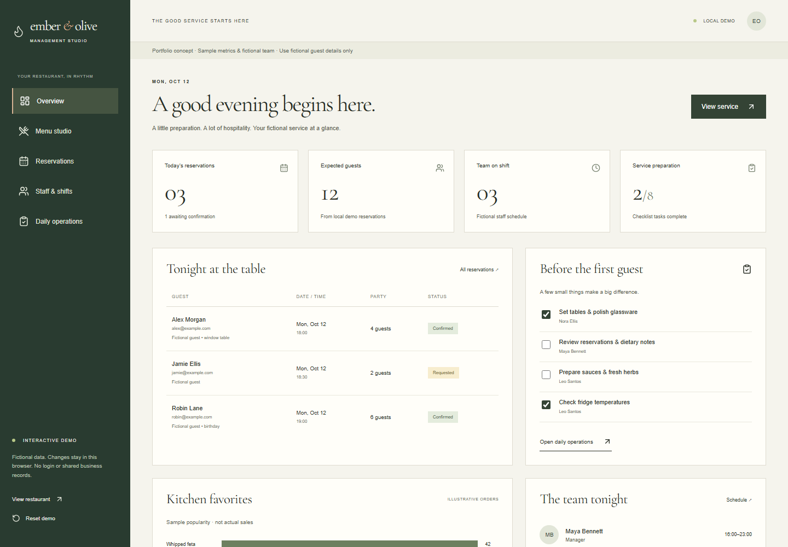

EMBER & OLIVE / AGENCY PORTFOLIO
03 / 05
Behind the welcome,
a working studio.
Reservations, team shifts & daily preparation

FICTIONAL RESTAURANT CONCEPT
Not a client project. Actual working application.
Explore the demo ↗
ember-olive-demo.pages.dev